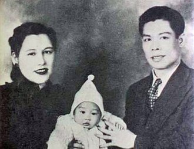

Career and education1940–1958: Early roles, schooling and martial arts initiation Lee's father Lee Hoi-chuen was a Cantonese opera star. As a result, Junior Lee was introduced to the world of cinema at a very young age and appeared in several films as a child. Lee had his first role as a baby who was carried onto the stage in the film Golden Gate Girl.[20] He took his Chinese stage name as 李小龍, lit. Lee the Little Dragon, for the fact that he was born in both the hour and the year of the Dragon by the Chinese zodiac.[21] As a nine-year-old, he co-starred with his father in The Kid in 1950, which was based on a comic book character, "Kid Cheung", and was his first leading role.[22] By the time he was 18, he had appeared in 20 films.[21] After attending Tak Sun School (德信學校; several blocks from his home at 218 Nathan Road, Kowloon), Lee entered the primary school division of the Catholic La Salle College at age 12.[23] Lee and Ip Man in 1958 In 1956, due to poor academic performance and possibly poor conduct, he was transferred to St. Francis Xavier's College, where he was mentored by Brother Edward Muss, F.M.S., a Bavarian-born teacher and coach of the school boxing team.[19][24][25] After Lee was involved in several street fights, his parents decided that he needed to be trained in martial arts. In 1953, Lee's friend William Cheung introduced him to Ip Man,[26][27] but he was rejected from learning Wing Chun Kung Fu under him because of the long-standing rule in the Chinese martial arts world not to teach foreigners.[28][29][additional citation(s) needed] His one-quarter European background from his mother's side was an initial obstacle to his Wing Chun training. Cheung spoke on his behalf and Lee was accepted into the school.[30] Lee began training in Wing Chun with Ip Man.[31] Ip tried to keep his students from fighting in the street gangs of Hong Kong by encouraging them to fight in organized competitions.[32] After a year into his Wing Chun training, most of Ip Man's other students refused to train with Lee when they had learned of his mixed ancestry, as the Chinese were generally against teaching their martial arts techniques to non-Asians.[33][34] Lee's sparring partner, Hawkins Cheung, states, "Probably fewer than six people in the whole Wing Chun clan were personally taught, or even partly taught, by Ip Man".[35] However, Lee showed a keen interest in Wing Chun and continued to train privately with Ip Man, William Cheung, and Wong Shun-leung.[36][37] In 1958, Lee won the Hong Kong schools boxing tournament, knocking out the previous champion, Gary Elms, in the final.[19] That year, Lee was also a cha-cha dancer, winning Hong Kong's Crown Colony Cha-Cha Championship.[38] | v  |
|---|
|
EARLY LIFE |

|
|---|---|
|
Bruce Lee's birth name was Lee Jun-fan. His father, Lee Hoi-chuen, was a Cantonese opera singer based in Hong Kong. His mother Grace Ho was born in Shanghai, and she was of Eurasian ancestry.[15] In December 1939, his parents traveled to California for an international opera tour in Chinatown, San Francisco.[16] He was born there on November 27, 1940, allowing him to claim U.S. citizenship due to the United States' jus soli citizenship laws.[17] When he was four months old (April 1941), the Lee family returned to Hong Kong.[16] Soon after, the Lee family experienced unexpected hardships over the next four years as Japan, amid World War II, launched a surprise attack on Hong Kong in December 1941 and ruled the city for the next four years.[16] Lee's maternal grandfather was Cantonese, his maternal grandmother was English,[18] and his maternal great-uncle, Robert Hotung, was a Hong Kong businessman of Dutch Jewish and Cantonese descent.[19] |